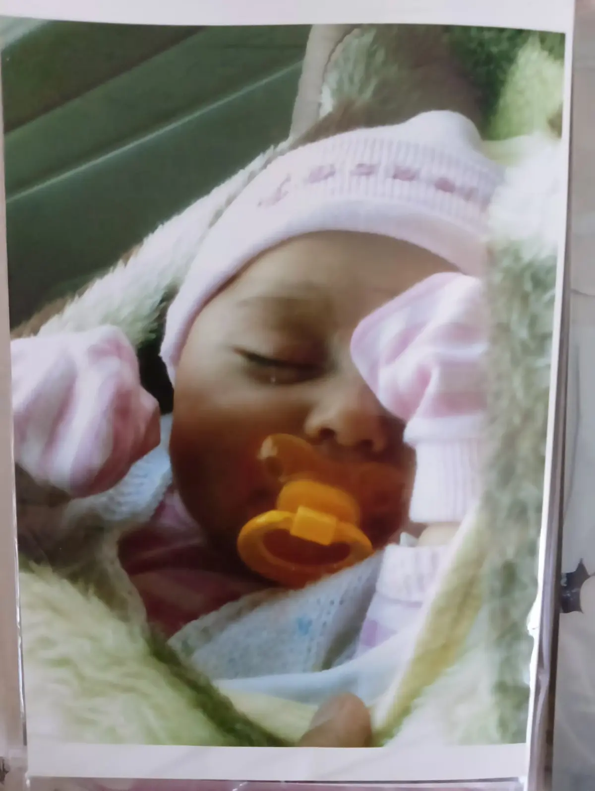
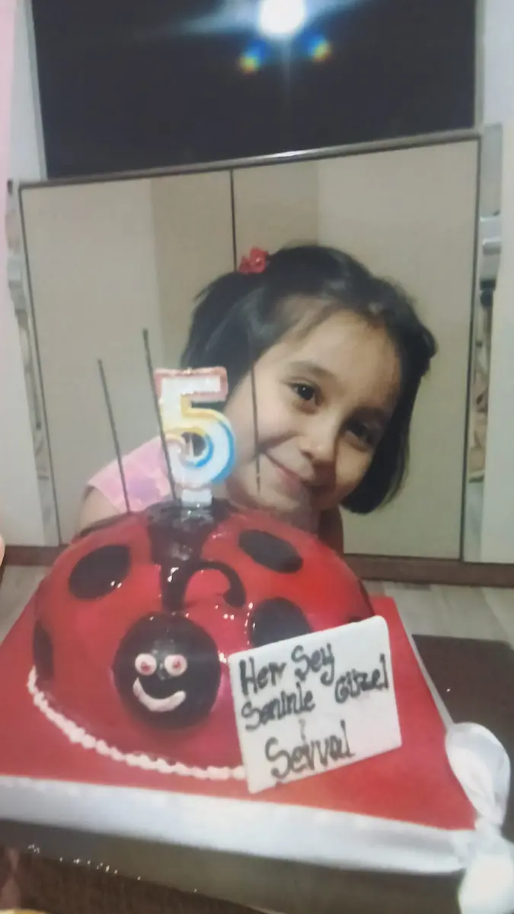

Her şey, dünyaya gözlerini kapatıp huzurla uyuyan bu küçücük kızla başladı.
Hayatıma Özel
Bu uygulamayı senin için hazırladım. 🤍
Ama açabilmek için küçük bir şartım var.
Şifreyi benden alman gerekiyor.
Bana yaz ya da ara, şifreyi söyleyeceğim. 💙

FURKAN'DAN ŞEVVAL'E
Çok merak ettiğin sürpriz
işte geldi.
En güzel deneyim için sesi aç ✦
Buraya kadar gördüğün her şey, seni düşündüğüm küçük anlardan oluştu. Bazısını yazarken güldüm, bazısında durup seni özledim.
Belki kusursuz olmadı… Ama içindeki her cümlede, her fotoğrafta ve her şarkıda gerçekten ben vardım. Çünkü sana sıradan bir doğum günü mesajı bırakmak istemedim. Bir gün yeniden açtığında, bugün seni ne kadar sevdiğimi tekrar hissedebileceğin bir yer bırakmak istedim.
Hayatıma bir günlüğüne girdiğini sandığım kişi, fark etmeden yarınlarımın içine yerleşti. Şimdi güzel bir şey yaşadığımda anlatmak istediğim, yorulduğumda sesini aradığım, geleceği düşündüğümde yanımda hayal ettiğim kişi sensin.
İyi ki o garip tesadüf bizi birbirimize getirmiş.
İyi ki ne yaşarsak yaşayalım birbirimizden tamamen kopamamışız.
Ve iyi ki bugün, seni sevdiğimi söyleyebildiğim bir hayatın içindeyim.
Seni çok ama çok seviyorummmmmmmm…
— FurkanMadem evine hediye gönderemiyorum, madem sana hediye kabul ettiremiyorum… O hâlde ben rahat durur muyum? Durmam. Eğer hazırlamak istersen —ki sen böyle şeyleri çok seviyorsun bitanem— gerçekten sana hediyem olsun bu. Belki görünce şok olacaksın ama inşallah tam istediğim gibi olur ve odanda çok güzel durur.
Dört büyük parça. Hızlı hazırlanır; sevimli bir el yapımı çiçek gibi görünür.
Kolay olanı aç ↓Biraz daha uğraştırır; daha hacimli, gerçekçi ve zambağa daha yakın görünür.
Detaylı olanı aç ↓Birleştirdiğinde, sana hazırladığım bu küçük dünyanın bir parçası gerçekten ellerinde olacak.